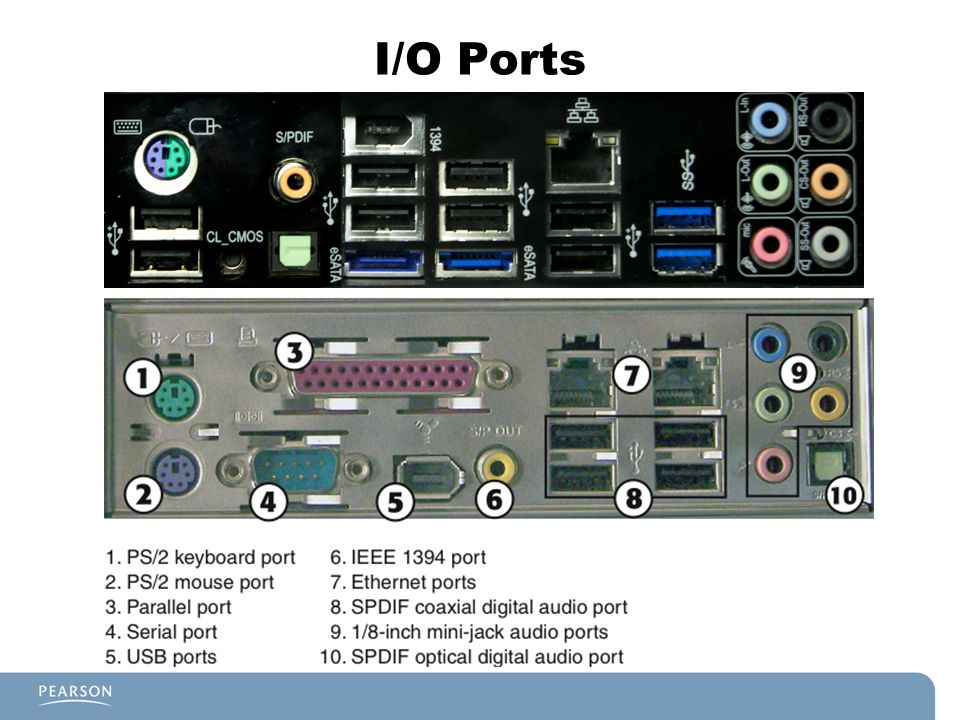

Accueil
B5
B6
B7
Sommaire
B6- Back Panel I/O
Le panneau d'entrée/sortie permet de brancher des périphériques

Il permet de brancher :
Clavier
Dispositif de pointage
Mini DIN
USB
IEEE 1394 (FireWire)
COM/Serial
Vidéo VGA
Vidéo DVI
Vidéo Display Port
Vidéo HDMI
SPDIF In/Out
Jack In/Out
Surround
Subwoofer
Microphone
MoDem
Réseau par RJ45
Thunderbolt
Imprimante